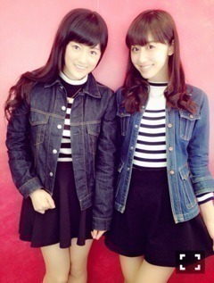

| 2016/07 06 Wed | 斎藤ちはる 大学教授と対談！コーナー大募集！の二本立て〜(´>∀<｀)ゝ |
ちはるーむへようこそ(﹡ˆ ˆ﹡)

これは去年、たまたまひなちまと
全くコーディネートが一緒だったときの写真！！
お互いびっくりした〜(﹡ˆ ˆ﹡)
気が合う♡♡
実は私、最近全身ブラックコーデが多い！
そしたら友達に
病んでるの？？大丈夫？？って
聞かれちゃった...( ;o; )笑
全然そんな事ないのに〜！！
-------------------------♡
先日、私が通っている明治大学の井田正道教授と、対談をしてきました！
18歳以上に引き下げられた選挙権について学びつつ、たくさんお話をしてきました。
現役大学生にしては知識が浅はかだったかもしれませんがリアルな声で対談しています。
もう少しで選挙日の7/10ですが、
期日前投票も行っています。
この記事を見て少しでも選挙に興味を持ってくれる方がいたら本望です！
明治大学ホームページ
「18歳からの選挙権について学ぼう！」
明治大学井田正道教授×乃木坂46斎藤ちはる
良かったらご覧ください\( ˆoˆ )/
-------------------------♡
毎日ブログあげるからには、
なにかコーナーとか新しいことを始めたいな〜っておもってるんだけど、
何かいいアイデアあるかな？？
毎日同じ事を続けてると飽きが生じるから
月曜日は○○コーナー！
火曜日は○○コーナー！など
曜日ごとに決めたいな〜って思ってます！
(金曜日はカレーの日！みたいな感じ)
こんな事に挑戦してほしい！でも
こんなちはるが見たい！でも
○○食べてほしい！でも
○○について語ってほしい！でも
なーんでもOKです(｡･o･｡)ﾉ
思いついたら、このブログのコメント欄にコメントしてください♪
皆さんからのアイデア、募集します(﹡ˆ ˆ﹡)
楽しいのたくさん待ってるよ(﹡ˆ ˆ﹡)
前のグラビアの時の写真。
ひとつ結びもたまにはいいかも。
人生、もっと時間が欲しい。
1日が27時間あればいいのに。
プラス3時間は、睡眠時間に当てたい！
でも最近寝なくても大丈夫になってきたな〜
大人になったってことなのかな？？( ◦˙ ˙◦ )
おやすみ♡
斎藤ちはる